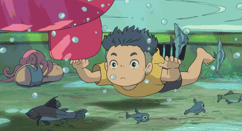
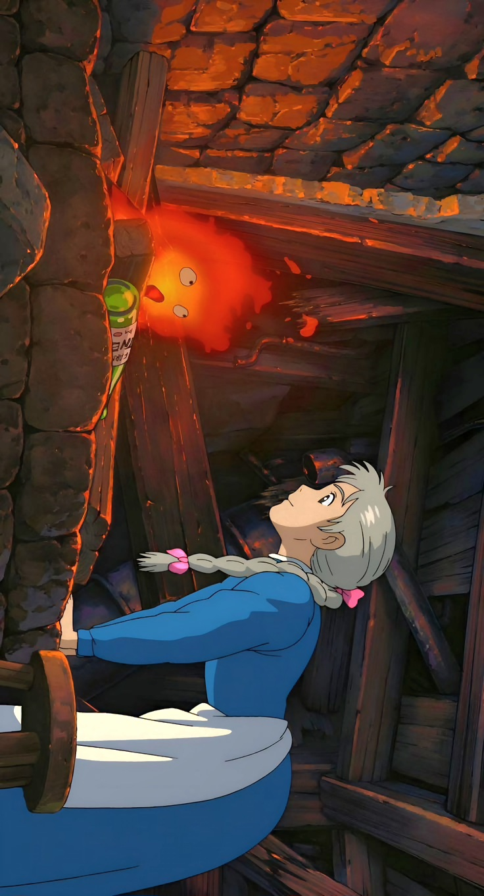

"Si atrapas un pez con rostro habrá una desgracia. Eso dicen."
-Ponyo

“Un corazón es una carga pesada de llevar”.
-El castillo ambulante

"Nada de lo que sucede se olvida.
Incluso si ya no lo recuerdas.
-El viaje de Chihiro"